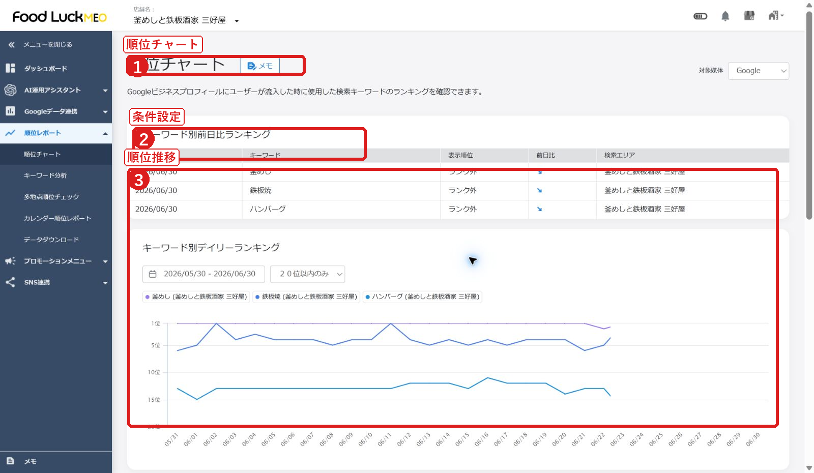

FoodLuck MEO 飲食店向け操作説明書
FAQ全カテゴリ本文反映版 / 日常運用・初期設定・連携機能まで網羅
| この版の位置づけ MEOダッシュボードFAQ全548記事の本文を取得し、未取得0件で反映確認しました。飲食店スタッフが操作する項目、FoodLuck側または管理者が対応する項目、必要時に確認する項目を分けて整理しています。 |
|---|
1. 全体の使い方
FoodLuck MEOの説明書は、日常運用だけでなく初期設定、SNS連携、HP連携、各媒体連携まで含めて管理します。ただし、すべてを店舗スタッフが触る必要はありません。
| 区分 | 主に見る人 | 対象カテゴリ |
|---|---|---|
| 日常運用 | 店舗スタッフ・店長 | 店舗基本情報、写真管理、投稿、クチコミ返信、インサイト、順位、クチコミ促進、クーポン |
| 分析・改善 | 店長・運用担当 | クチコミ分析、データダウンロード、運用マニュアル、ウェビナー |
| 初期設定・管理 | FoodLuck・管理者 | 基本操作、初期設定、その他、グループ管理、Googleについて |
| 連携・高度機能 | FoodLuck・管理者・必要時の店舗担当 | WEBサイト最適化、店舗ページ限定機能、SNS連携、各媒体連携 |
| 店舗へ渡す時の注意 初期設定や連携機能の章も必要範囲に入れていますが、外部アカウント権限、API、タグ設置、媒体連携は誤操作の影響が大きいため、FoodLuck側確認を前提に案内してください。 |
|---|
2. 基本操作・画面の見方
店舗一覧から対象店舗を開き、左メニューから各機能へ移動します。スマホ版は確認や簡易操作、PC版は設定や一括作業に向いています。
画面例1: 店舗一覧

- 店舗名で検索します。
- 対象店舗を開きます。
- 必要に応じて一覧を出力します。
- TOPメニュー、ダッシュボード、スマホ版、メモ機能、アラートメール、二段階認証、IP制限などを基本操作として確認します。
- 店舗削除や店舗データ更新は影響が大きいため、FoodLuckへ確認してから行います。
- エラーが出た時は、画面名、操作日時、エラー文、スクリーンショットを残します。
3. 初期設定・Google連携・ユーザー管理
初期設定は運用開始前の土台です。GBP連携、ユーザー、権限、グループ、キーワード、順位計測設定が整っていないと、投稿・クチコミ・数値確認が正しく使えません。
- GBP連携は、オーナー権限を持つGoogleアカウントでDashboardから許可し、対象ビジネスを選びます。
- 再連携やステータス確認は、Google側の権限変更、アカウント削除・停止、店舗情報変更があった時に確認します。
- ユーザーはメールアドレス単位で作成し、全権、承認、編集、閲覧、カスタムなどの役割を付与します。
- ワークフロー申請を必須にすると、投稿やクチコミ返信で承認者の確認が必要になります。
- グループは複数店舗をまとめて管理するためのフォルダです。店舗追加・削除、親フォルダ、全店舗選択の扱いに注意します。
- キーワードは順位計測の基準です。仮登録、本登録、検索エリア、グルーピングを確認します。
| FoodLuck側推奨 初期設定、権限、グループ、GBP再連携、キーワード本登録は、店舗側だけで判断せずFoodLuckが確認します。 |
|---|
4. 店舗基本情報
店舗基本情報はGoogle上の来店前情報です。店名、住所、電話番号、Webサイト、SNS、予約リンク、営業時間、特別営業時間、カテゴリ、属性、サービスを確認します。
画面例2: 店舗基本情報

- 基本情報を確認します。
- 営業時間を設定します。
- 登録前に外部表示を想定して確認します。
- 特別営業時間は年末年始、大型連休、臨時営業、臨時休業で使います。日をまたぐ場合は日付を分けます。
- 7日以上の休業や期間未定の休業は臨時休業として扱います。
- 改ざん防止、更新予約、更新履歴は、Google側や外部からの変更を確認するために使います。
- 住所表記揺れ、カテゴリ、サブカテゴリ、サービス、商品、説明文は検索される言葉と一致するように整えます。
5. 写真管理
写真はお客様の不安を減らし、来店のイメージを作る材料です。料理、外観、入口、店内、席、メニュー、季節商品を継続して追加します。
画面例3: 写真管理

- 新規登録します。
- カテゴリを選びます。
- オーナー提供とユーザー提供を分けて見ます。
- 画像はJPG/PNG、10KBから5MB、720px角以上を目安にします。動画は最大30秒、25MBまでが目安です。
- 削除できるのは主にオーナー提供写真です。ユーザー提供写真はGoogleへの削除申請が必要です。
- ロゴ写真、カバー写真、料理写真の役割を分けます。
- Yahoo!、エキテン、Yext、IG→GBP写真管理など外部連携写真は連携状態を確認します。
6. 投稿
投稿は、今お店に来る理由を伝える機能です。最新情報、イベント、特典、商品投稿、SNS同時投稿、予約投稿、繰り返し投稿を使い分けます。
画面例4: 投稿一覧

- 投稿一覧を確認します。
- ステータスを見ます。
- 新規投稿へ進みます。
画面例5: 新規投稿

- 投稿種類を選びます。
- 媒体を選びます。
- 本文、画像、日時を設定します。
- 予約投稿は最大5件、当日予約は3時間以上先、修正・削除は予約時間の約1時間前までが目安です。
- Google投稿は文字数、画像、URL、電話番号やメールアドレス、ポリシー違反表現で拒否される場合があります。
- Google処理中、投稿待ち、予約中、API投稿エラー、投稿拒否、投稿削除などの状態を確認します。
- SNS投稿では電話番号除外設定、画像サイズ、複数画像、ハッシュタグ、媒体ごとの反映仕様を確認します。
7. クチコミ返信・クチコミ分析
クチコミ返信は、投稿者だけでなく未来のお客様にも見られます。クチコミ分析では、良い点、悪い点、よく出る言葉を拾い、現場改善に使います。
画面例6: クチコミ管理

- 未返信を見ます。
- クチコミ内容を確認します。
- 返信・設定を行います。
- 手動返信、返信テンプレート、自動返信、AI返信を使えます。AI返信も最後は人の目で整えます。
- 低評価には感情的に反論せず、受け止め、事実確認、改善姿勢、必要に応じた直接連絡を案内します。
- クチコミ削除はGoogle側判断です。スパムや違反の可能性、削除申請、一時非表示と完全削除の違いを確認します。
- 感情分析、ハイライト分析、クチコミ評価要約は、現場改善やホームページ表示に活用します。
8. インサイト・順位・データダウンロード
数値は、検索されたか、見られたか、行動されたか、順位がどう変わったかを見るために使います。レポート出力やデータダウンロードもここに含めます。
画面例7: インサイト

- 期間を選びます。
- 主要指標を見ます。
- 検索経路や行動を確認します。
画面例8: 順位チャート

- キーワードを見ます。
- 検索地点を確認します。
- 順位推移を確認します。
- 全体閲覧ユーザー数はGoogle検索とGoogleマップで見た人数です。
- 全体アクション数は電話、Webサイト、ルート検索などの合計です。電話は実際の着信数とずれることがあります。
- 全体アクション率は表示数に対する行動割合です。店舗情報の魅力や導線を見る目安になります。
- 順位は検索地点、キーワード、競合、Google側の変動で上下します。1日単位より月単位の傾向を見ます。
- インサイト、順位レポート、個店・グループのデータダウンロードは、月次報告や改善確認に使います。
9. クチコミ促進・クーポン・店舗ページ限定機能
来店後のクチコミ依頼、アンケート配布、クーポン、FAQ管理、AI運用アシスタントは、集客と運用効率を高めるための追加機能です。
- アンケートは質問タイトル、回答項目、Googleレビューへの遷移、ツールレビューへの遷移を設定します。
- QRコード配布は、アンケート作成、デザイン選択、PDF出力、店頭設置の流れで使います。PDFは店舗側で保管します。
- メール・SMSでクチコミ依頼を送る時は、送信タイプ、顧客情報、テンプレート、対象アンケート、送信日時を確認します。
- クチコミ依頼では、特典と引き換えに高評価を依頼するなどのNG行為を避けます。
- クーポンは作成、画像サイズ、位置情報の必須/任意、アプリ配布方法、投稿機能での配布を確認します。
- FAQ管理やAI運用アシスタントは、予約、支払い、個室、駐車場など、来店前の不安を減らす情報づくりに使います。
10. WEBサイト最適化・HP連携
HP連携、HP投稿連携、構造化データ、クチコミ評価要約は、自社ホームページとGoogle情報をつなげる機能です。タグ設置やHTML編集を伴うため、FoodLuck側確認を前提にします。
- 個店HP連携は、店舗ホームページのHTMLにJavaScriptまたはPHPタグを設置します。バックアップを取ってから作業します。
- グループHP連携は、グループタグや営業時間タグを設置します。グループ削除や作り直しをするとタグ再設置が必要になる場合があります。
- 構造化データは検索エンジンが店舗情報を理解しやすくするためのコードです。個店とグループで生成条件や上書きに注意します。
- HP投稿連携、HP FAQ管理、フリー複数行入力、クチコミ評価要約は、ホームページ上の情報更新や信頼性向上に使います。
11. SNS連携機能
X、Facebook、Instagram、LINEをDashboardと連携すると、投稿連携や分析、メッセージ配信が使えます。連携には外部アカウント権限が関わります。
- 運用フローは大きく2つです。DashboardからGBPとSNSへ同時投稿する方法と、SNS投稿をGBPへ反映する方法があります。
- Instagramは、Facebook経由連携と単体連携で使える運用が異なります。FacebookページとInstagramのリンクが必要な場合があります。
- Instagram分析は連携後に使えます。古い連携では再連携が必要な場合があり、利用可能アカウント数にも上限があります。
- X連携ではDeveloper PortalやBasicプラン、キーワード/ハッシュタグ設定が関わります。接続できない時はブラウザ変更、シークレットモード、Cookie削除を試します。
- LINE連携はLINE Developers側でチャネルID、シークレット、ユーザーID、アクセストークン、Webhook URL、LIFF IDなどを準備します。
- あいさつメッセージ、応答メッセージ、リッチビデオメッセージ、メッセージ配信は、LINE公式の運用ルールと合わせて確認します。
12. 各媒体連携機能
Yahoo!、Apple、食べログ、エキテンなどの外部媒体は、Googleとは反映仕様や更新可能項目が異なります。
- Yahoo!は店舗基本情報、投稿、写真、インサイト、特別営業時間など、Yahoo!プレイス側の仕様に合わせて確認します。
- Appleマップはビジネス名、郵便番号、住所、WebサイトURL、メインカテゴリなど更新可能項目が限られます。反映には時間がかかる場合があります。
- 食べログは飲食店メニューや項目設定、一括登録など、飲食店向けの媒体情報として確認します。
- エキテンは投稿、写真、店舗基本情報など個店・グループ共通の管理方法を確認します。
- 外部媒体連携は媒体側の審査・反映時間・項目制限があるため、Googleと同じ感覚で即時反映を期待しないよう案内します。
13. Googleについて・運用マニュアル・ウェビナー
Google側でのオーナー確認、権限譲渡、重複ステータス、住所や公式サイトの設定、クチコミ削除などは、Dashboard外の作業も含みます。
- オーナー確認は電話、メール、録画、ハガキなど方法が分かれます。審査中のまま進まない場合もあります。
- Googleビジネスプロフィールのオーナー、管理者、権限譲渡、7日間制限、削除、問い合わせ方法を確認します。
- 悪い評価があるからプロフィールを作り直す、Googleマップに載せたくないなどの相談は、影響を確認して慎重に判断します。
- AI検索、LLMO、多言語投稿、多言語メニュー、インバウンド、弱点開示、ターゲット明確化などは、今後のMEO運用の考え方として反映します。
- ウェビナーは操作説明、AI活用、レポート時短、クチコミ戦略、投稿改善などの学習資料として扱います。
14. FAQ全カテゴリ反映チェック
| FAQカテゴリ | 記事数 | 本文での扱い |
|---|---|---|
| ★基本操作★ 基本操作の手順はこちらをご確認ください | 1 | 日常運用章に本文反映 |
| 初期設定 GBP連携・ユーザー追加・グループ作成・順位計測設定 | 38 | 初期設定・管理者向けとして本文反映 |
| その他 店舗追加・更新の設定やスマホ版に関して | 29 | 日常運用章に本文反映 |
| 店舗基本情報 基本情報の編集・改ざん防止設定など | 34 | 日常運用章に本文反映 |
| 写真管理 写真の追加・削除について | 14 | 日常運用章に本文反映 |
| 投稿 最新情報・イベントなどの投稿について | 33 | 日常運用章に本文反映 |
| クチコミ返信 個店・グループからクチコミを返信する方法 | 26 | 日常運用章に本文反映 |
| クチコミ分析 | 18 | 日常運用章に本文反映 |
| インサイト Googleインサイトについて | 31 | 日常運用章に本文反映 |
| 順位 順位チャート・多地点順位チェック・カレンダーレポートについて | 23 | 日常運用章に本文反映 |
| クチコミ促進 クチコミを集めるツールであるアンケートの作成とそのURLの配布が出来る機能です。 ※MEOdashboardの有料オプション機能 | 37 | 日常運用章に本文反映 |
| クーポン管理 クーポン管理について | 6 | 日常運用章に本文反映 |
| WEBサイト最適化機能 HP連携・HP投稿連携・構造化データ作成・クチコミ評価要約 | 19 | WEBサイト最適化章に本文反映 |
| 店舗ページ限定機能 FAQ管理・AI運用アシスタントなど店舗ページ限定機能 | 19 | 日常運用章に本文反映 |
| グループ管理 その他グループページ機能 | 9 | 初期設定・管理者向けとして本文反映 |
| データダウンロード インサイト、順位レポートのデータダンロードについて | 8 | インサイト・順位章に本文反映 |
| SNS連携機能 X、Facebook、Instagram、LINE連携について | 48 | SNS連携章に本文反映 |
| 各媒体連携機能 Yahoo!・Apple・食べログ・エキテン | 32 | 各媒体連携章に本文反映 |
| Googleについて オーナー確認の方法などGoogleでの作業について | 61 | Googleについて章に本文反映 |
| 運用マニュアル | 48 | MEO運用の考え方として本文反映 |
| ウェビナー 過去に開催したウェビナーを公開します | 14 | 学習資料として本文反映 |
本文取得対象は548記事、取得済みは548記事、未取得は0記事です。
15. カテゴリ別記事一覧
全記事のタイトルをカテゴリ別に残します。本文は各章へ要約・再構成して反映し、詳細確認用にCSVも出力しています。
★基本操作★
- 多店舗管理向け_基本操作一覧
初期設定
- GAとGA4の違い
- GBPステータスについて
- GBP情報をMEO Dashboardに反映
- GBP連携のステータスについて
- Googleアカウントが削除・停止した場合に起こる事象の紹介
- Googleアナリティクス（GA4） キャンペーンURL生成
- Googleアナリティクス（GA4）との連携方法
- Googleアナリティクス（GA4）とは
- GoogleビジネスプロフィールとDashboardの再連携方法
- GoogleビジネスプロフィールとMEO Dashboardの連携方法
- Googleビジネスプロフィールにてグループを作成する方法
- Googleビジネスプロフィールのオーナー権限移譲の方法
- Googleビジネスプロフィールの店舗情報一覧のダウンロード方法
- Yextについて
- Yext連携の初期ご対応について
- 【個店】Yextで写真連携を行う方法
- アカウントの設定を変更する方法
- アカウント発行メールが届かない場合
- キーワードの一括変更方法
- キーワードの変更方法
- キーワードの設定方法
- キーワード登録が可能なユーザーアカウント発行方法
- キーワード設定の検索エリアについて
- グループフォルダ・グループ管理について
- グループ作成の一括登録方法
- グループ管理画面での編集機能について
- パスワードをお忘れの場合やパスワードを未登録の方
- パスワード設定時の注意事項
- マスターアカウントの登録手順
- ユーザーアカウントの作成（ユーザー側のすること）について
- ユーザーアカウントの削除方法
- ユーザーアカウントの５つの役割について
- ユーザーアカウント作成 機能ごとの役割の設定方法
- ユーザーアカウント作成について
- ユーザー一括追加方法
- ワークフロー申請必須のユーザーアカウント発行方法
- 一括でキーワードを設定する方法
- 新規グループの登録方法
その他
- Dashboardからのアラートメール送信先を変更したい場合
- GBP連携が解除された、とエラーメッセージが届いた際の確認方法
- IPアドレス制限機能
- MEO Dashboard 店舗データ更新方法
- MEO Dashboardを見る端末について
- TOPにあるメニュー画面の見方
- WF申請された投稿文章を編集して承認する方法
- 【グループ】ワークフロー申請の使用方法（申請者）
- 【グループ】送信用メールアドレスの一括追加・変更方法
- 【個店】ワークフロー申請の使用方法（申請者）
- 【個店】送信用メールアドレスの設定方法
- 【個店・グループ】ワークフロー申請の承認方法
- 【各店舗運用状況】店舗ごとの投稿数や写真枚数を確認する方法
- アカウント連携一覧機能の使い方
- エラーの原因について
- ジオロケーション（位置情報）の設定とMEO順位への影響
- スマホ版 クチコミ管理
- スマホ版 ダッシュボード
- スマホ版 写真管理
- スマホ版 利用方法
- スマホ版 投稿方法
- スマートフォン画面
- ダッシュボードに表示される情報や機能について
- メモ機能について
- ログイン時の二段階認証（MFA機能）
- ワークフロー機能の概要
- 店舗を削除する方法
- 新規店舗追加の方法
- 複数店舗を一括で追加する方法
店舗基本情報
- AI翻訳機能_店舗基本情報 ビジネス文章
- AI翻訳機能_店舗基本情報 ビジネス文章（グループ）
- GBPとDashboard間の変更の同期について
- Googleビジネスプロフィールに予約リンクの入力欄がない
- Googleビジネスプロフィール上で基本情報を編集すると、ダッシュボードに反映されない
- MEO Dashboard上での属性の設定方法
- SNSプロフィールのURL記載形式について
- Yahoo!プレイスへの「特別営業時間」の登録について
- 【グループ】宅配・受け取り設定
- 【グループ】改ざん防止機能について
- 【ホテル】店舗基本情報の一括編集方法（Excel）
- 【ホテル】店舗基本情報の編集（個店）
- 【ホテル】店舗基本情報を全店舗共通で編集する方法
- 【個店】宅配・受け取り連携
- 【個店】改ざん防止機能について
- グループ一括編集ボタンについて
- サービスの一括登録の方法
- サービスの追加方法
- テイクアウトや宅配等の営業時間の設定方法
- ビジネス情報について
- 営業ステータスの変更を予約する方法
- 営業時間の記載方法（Excel）
- 営業時間の設定方法
- 属性の一括登録
- 店舗基本情報の一括編集方法（Excel）
- 店舗基本情報の予約方法について
- 店舗基本情報の予約時間を変更する方法
- 店舗基本情報の編集方法（◯☓の表）
- 店舗基本情報更新履歴について
- 改ざん防止ログ
- 改ざん防止機能が働くタイミングについて
- 特別営業時間の設定方法
- 臨時休業の掲載方法
- 閉業時の対応方法
写真管理
- Googleビジネスプロフィールに表示する画像・動画の推奨サイズ
- おすすめの投稿写真について
- カバー写真のサイズについて
- グループでの写真の削除方法
- グループでの写真・動画の追加方法
- ユーザーが投稿した画像の削除方法
- ユーザー投稿写真の問題を報告（削除申請）する
- ロゴ写真とカバー写真の概要と表示イメージ
- ロゴ写真・カバー写真の設定方法
- 写真のカテゴリー投稿について
- 写真の削除方法
- 写真の追加方法（Googleビジネスプロフィールのみ連携中）
- 写真の追加方法（Yahoo!プレイス連携後）
- 写真予約の方法
投稿
- AI翻訳機能_投稿
- Excelを使用し投稿する方法
- GoogleとYahoo!の同時投稿がうまくいかない場合
- Googleビジネスプロフィールの「商品投稿」項目が表示されない理由
- Google投稿が投稿拒否になった原因と対処方法
- Google投稿で意識したいポイント
- Google投稿時のエラー「Must be at most 1500 characters」の解消方法
- MEO Dashboard上からの商品投稿について
- RSSブログ連携について
- SNS投稿がGBPに反映されない原因と対処法
- Yahoo!投稿時の「掲載期間設定」エラーの解消方法
- グループ管理画面からの一括投稿について
- ハッシュタグAI生成機能について
- ハッシュタグリスト機能について
- ボタン追加 URL事前設定機能
- 予約投稿でエラーが表示される際の対処法
- 予約投稿の設定方法
- 実施した投稿の反映箇所
- 承認期限を超えた予約投稿の承認
- 投稿の予約可能件数について
- 投稿の方法
- 投稿の種類
- 投稿の複製（個店）
- 投稿後のステータスについて
- 投稿時の複数画像投稿について
- 投稿機能のイベントについて
- 投稿用画像の規定
- 投稿画像のトリミングとテキスト追加
- 画像AIアシスタント機能の使用方法
- 繰り返し投稿方法
- 詳細文AIアシスタントの活用ポイント
- 詳細文AIアシスタント機能の使用方法
- 重複投稿のスキップ仕様について
クチコミ返信
- AI翻訳機能_クチコミ返信
- AI翻訳：クチコミAI返信アシスタント
- Dashboardへのクチコミ反映タイミングについて
- GBP側で直接削除したクチコミ返信のDashboardへの反映について
- Googleビジネスプロフィールのクチコミ削除申請の手順
- 【グループ】クチコミ一括返信の方法
- 【グループ】クチコミ自動返信の設定方法
- 【グループ】クチコミ自動返信削除の方法
- 【グループ】クチコミ返信テンプレートの設定方法
- 【個店】クチコミ一括返信の方法
- 【個店】クチコミ自動返信の設定方法
- 【個店】クチコミ返信テンプレートの作成方法
- 【個店】自動返信を削除する方法
- クチコミAI返信アシスタントの使用方法
- クチコミAI返信アシスタント機能 β版 Powered by ChatGPT API
- クチコミの★（星）の数でソートを掛ける方法
- クチコミ投稿通知
- クチコミ管理の使用方法
- クチコミ自動返信が実行されない場合
- クチコミ自動返信の反映タイミング
- クチコミ返信について（すべての口コミに対応すべきか）
- クチコミ返信の注意点
- クチコミ返信方法
- 一度返信したクチコミの内容の編集方法
- 低評価のクチコミに対する返信
- 書いてもらったクチコミ「一時的な非表示」か「完全な削除」かの見分け方
クチコミ分析
- キーワード「仮登録」から「本登録」への変更方法（グループ）
- キーワード「仮登録」から「本登録」への変更方法（個店）
- キーワード「仮登録」方法（グループ）
- キーワード「仮登録」方法（個店）
- キーワード「本登録」方法（グループ）
- キーワード「本登録」方法（個店）
- キーワードのグルーピング（グループ）
- キーワードのグルーピング（個店）
- クチコミハイライトランキングのデータ出力（ダウンロード）
- クチコミハイライト分析の初期設定
- クチコミハイライト分析機能の概要
- クチコミハイライト分析画面（グループ）
- クチコミハイライト分析画面（個店）
- クチコミ傾向分析 概要
- クチコミ分析にてダウンロードしたクチコミ数の差異について
- クチコミ分析画面（グループ）
- クチコミ分析画面（個店）
- 競合ワード比較
インサイト
- API切り替えによる、閲覧ユーザー数の計測の変化（2023年1月～）
- Googleのインサイト情報が表示されない
- Googleインサイトの数値の”0”表示について
- Googleビジネスプロフィールへの流入キーワード確認について
- Google側の数値（インタラクション等）がDashboardで「0回」と表示される原因と反映タイミング
- Google検索回数とGoogleマップ検索回数の違い
- MEO Dashboard内のインサイトデータを取得できる期間
- 【グループ】インサイト情報について
- 【個店】インサイト情報について
- アクション回数のカウント方法
- インサイトの電話回数と実際の着信回数の相違について
- インサイトクロス分析の、アクション数と３位以内率の推移の見方
- インサイトクロス分析のおける”3位以内率”について
- インサイトクロス分析内の、3位以内率とランキング別キーワード数推移について
- インサイトデータの基データについて
- インサイト情報で直近の数値が表示されない場合について
- インサイト情報の「ルートの検索」のカウント方法
- インサイト情報の数値の変動について
- インサイト情報を前年と比較する方法
- インサイト項目の表示期間の設定方法
- 全体アクション数について
- 全体アクション率について
- 全体閲覧ユーザー数について
- 想定来店者数について
- 期間指定にある一ヶ月の範囲
- 業種別インサイトの業種を変更する方法
- 業種別インサイト比較について
- 直近３ヶ月のインサイト情報について
- 自身で検索やGoogleビジネスプロフィールからアクションした場合（WEBサイト・ルート・電話）の影響
- 過去のインサイトデータを定期保存すべき理由
- 都道府県別インサイト比較について
順位
- Yahoo!の順位表示について
- 「ローカル検索表示なし」と「競合ナレッジパネル」の表示について
- カレンダー順位レポート
- カレンダー順位レポートに掲載している順位について
- キーワード分析
- キーワード別デイリーランキングの推移グラフで、キーワードの順位が出ない
- スマホやパソコンで検索した際の順位とMEOdashboardで表示されている検索順位について
- 多地点順位チェックが左側ナビゲーションに表示されない件について
- 多地点順位チェックの、地点別順位の数カ所が数字の羅列になっている
- 多地点順位チェックの「地点別順位」の住所表記が〇〇市や日本となっている場合
- 多地点順位チェックの画像ダウンロードについて
- 多地点順位チェックの計測結果について
- 多地点順位チェックの計測間隔
- 多地点順位チェックの設定方法
- 多地点順位チェックの順位表示の検索エリアについて
- 多地点順位チェック機能について
- 検索エリアについて
- 検索エリアの指定について
- 競合キーワード別デイリーランキングの見方について
- 順位チャートの取得タイミングはいつですか？
- 順位チャートの確認方法
- 順位チャートの順位と多地点順位チェックの順位の相違
- 順位計測のランク外表記について
クチコミ促進
- AIレビュー生成アンケートを作成する方法
- SMS送信の条件について
- 【グループ】アンケート結果の見方
- 【グループ】アンケート配布について
- 【個別店舗】アンケート結果の見方
- 【個別店舗】アンケート配布について
- お声がけ以外でクチコミを集めやすくする方法
- アンケートURL リダイレクト処理（グループのみ）
- アンケートの二次元バーコードデザイン設定方法
- アンケートの多言語設定の使用方法
- アンケートの編集方法
- アンケートの編集方法
- アンケートを作成する方法
- アンケートフォームのデザイン変更方法
- アンケート回答者付きアンケートの見え方（ユーザー側）
- アンケート回答者付の使用方法
- アンケート機能の概要
- クチコミを書いてもらいやすくする方法
- クチコミ依頼のNG行為
- クチコミ依頼の予約時間変更方法
- クチコミ依頼の使用方法
- クチコミ依頼の送信元メールアドレス
- クチコミ依頼の送信方法について
- クチコミ促進アンケートの編集可能期間について
- クチコミ促進機能のSMSの文字数制限
- クチコミ促進機能のメールの文字数制限
- クチコミ促進機能を使って、SMSないしメールで送られたお客様情報について
- クチコミ促進機能使用方法（URL）
- クチコミ促進機能使用方法（二次元バーコード）
- クチコミ収集時の注意点
- クーポン取得位置情報 「必須」「任意」の設定
- メールからアンケートを送る場合の予約期間
- メール送信テンプレート登録方法
- レビュー画面二次元バーコードについて
- 一括送信テンプレート登録方法について
- 個別店舗ごとに異なるURLのアンケートを作成する方法
- 全店舗共通URLのアンケートを作成する方法
クーポン管理
- クーポンの作成方法について
- クーポンの画像サイズについて
- クーポンアプリのダウンロード方法 （APKファイルダウンロード版）
- クーポンアプリのダウンロード方法（二次元バーコード版）
- クーポン機能について
- 作成したクーポンを投稿機能で配布する方法について
WEBサイト最適化機能
- HP FAQ管理機能
- HP投稿連携について
- HP連携後、グループピングしたグループそのものを削除した場合
- HP連携後、グループ化している一部の店舗でHP上の営業時間を変更したいのですが、MEOdashboard上で変更は可能でしょうか
- HP連携後にグループ化を解除/削除するデメリット
- HP連携後に情報変更を行う方法
- HP連携機能について
- HP連携機能の、「フリー複数行入力」の活用方法
- 【グループ】HP連携する際のタグ設置場所について
- 【グループ】HP連携をしていて特定の店舗のみ変更することがある場合について
- 【グループ】HP連携機能を利用してグルーピングのタグをHPに設置したら、 各店舗ごとの情報修正は可能かどうかについて
- 【グループ】構造化データ作成について
- 【個店】HP連携する際のタグ設置場所について
- クチコミ評価要約の設定方法
- クチコミ評価要約機能の概要
- グループでHP連携のタグを生成した後に、グループの店舗の変更をした場合
- グループ詳細にあるタグからHP連携設定を行った場合の情報の編集方法
- 店舗情報が各々のページに記載がある場合のHP連携方法
- 構造化データ作成について
店舗ページ限定機能
- AI運用アシスタント機能の使用方法
- AI運用アシスタント機能：クチコミ返信におけるキーワード判定の仕様
- Googleビジネスプロフィールから確認できるインサイト項目
- 「MAPでの閲覧ユーザー数」とは
- 【グループ】AI運用アシスタント機能について
- 【グループ】飲食店メニューの更新方法
- 【個店】飲食店メニューの更新方法
- インサイトについて
- インサイトデータの文字化けについて
- クチコミ感情分析機能
- 競合分析機能 設定方法
- 競合分析機能①：順位比較
- 競合分析機能②：クチコミ比較
- 競合分析機能③：ビジネス文・写真比較
- 競合分析機能④：投稿比較
- 競合分析機能の概要
- 競合分析機能：Googleビジネスプロフィール（GBP）URLの確認・取得方法
- 競合分析機能：競合店舗を登録したのにデータが反映されない場合
- 順位変動アラートについて
グループ管理
- 【グループ】グルーピングした店舗の変更方法
- 【グループ】グループ管理を利用した、クーポンの作成について
- 【グループ】店舗別インサイトデータダウンロード方法
- クーポン管理URLの一括作成について
- グループに登録した店舗を変更する方法
- グループの作成方法
- グループ作成の上限数
- 任意グループ比較について
- 投稿一覧
データダウンロード
- Googleインサイトデータのダウンロード時に、「出力範囲」を複数店に設定した場合、「データ種別」に表示される、「業種別」とは
- 【グループ】データのダウンロード方法
- ダウンロードしたデータの「-」表示について
- ダウンロードしたデータの平均値について
- データダウンロードの「キーワード別ランキングデータ」の出力時、登録キーワードをすべてダウンロードできない場合
- データダウンロード以外のレポート機能
- 個店ページから複数店舗データを一括ダウンロードする方法
- 店舗別の3位以内率を抽出する方法（自分で算出する方法）
SNS連携機能
- Dashboad上からSNSとGoogleビジネスプロフィールに投稿をする（イベント）
- Dashboardで投稿を削除した際の各媒体への反映について
- Dashboard上からSNSとGoogleビジネスプロフィールに投稿をする（最新情報）
- Dashboard上からSNSとGoogleビジネスプロフィールに投稿をする（特典）
- FacebookページとInstagramの連携方法
- Facebookページの作成方法
- IG → GBPの「ハッシュタグなし投稿」について
- IG→GBP写真管理について
- IG→GBP投稿について
- Instagramの投稿がGoogleに反映がされない場合
- Instagramアカウント連携（Facebook経由）の方法
- Instagramアカウント連携（単体）の方法
- Instagram分析機能_Instagramダッシュボード
- Instagram分析機能_インサイト情報
- Instagram分析機能_インサイト情報 投稿詳細
- Instagram分析機能_コメント分析
- Instagram分析機能_ハッシュタグ分析 ハッシュタグ登録方法
- Instagram分析機能_ハッシュタグ分析 詳細
- Instagram分析機能_ファンユーザーリスト
- Instagram分析機能_投稿カレンダー
- Instagram分析機能_注意事項
- Instagram分析機能_競合分析 競合店舗登録方法
- Instagram分析機能_競合分析 詳細
- Instagram分析機能をご使用いただく方法
- LINE LIF IDの作成方法
- LINE Webhook URLの設定方法
- LINE公式アカウントとMEODashboardの連携方法について
- LINE連携のために必要な情報と確認方法
- SNS投稿で「電話番号投稿の除外」設定OFFのときの挙動
- SNS投稿で電話番号投稿の除外設定
- SNS投稿注意点
- SNS投稿連携方法：X（旧Twitter）編
- SNS投稿：画像のサイズの仕様について
- SNS連携の運用フローに関して
- SNS連携：Facebook連携の方法
- X連携ができない時の解決策
- X（旧Twitter）アカウント連携_Twitter Developer PortalのBasicプラン契約方法
- X（旧Twitter）アカウント連携_Twitter Developer Portalの操作方法
- X（旧Twitter）アカウント連携に関して
- X（旧Twitter）連携：特定キーワード（ハッシュタグ）の設定と反映について
- 【LINE連携機能】あいさつメッセージの設定
- 【LINE連携機能】メッセージ配信
- 【LINE連携機能】リッチビデオメッセージの設定
- 【LINE連携機能】応答メッセージの設定
- 【事前準備】LINE連携のために準備が必要な点
- ポリシー違反投稿一覧
- 特定キーワードについて
- 連携後にInstagramのユーザーネーム・URLを変更された際のご対応について
各媒体連携機能
- Apple Account（Apple ID）作成時の電話番号認証がうまくいかない場合
- AppleBusinessとのアカウント連携方法
- AppleBusiness連携エラーの解消方法
- Appleアカウント作成方法
- Appleマップ 店舗基本情報の更新方法
- Apple連携後Dashboard上の「AppleマップのURL」が正しく反映されない場合
- Yahoo!のインサイト確認方法（グループ）
- Yahoo!インサイト確認方法（個店）
- Yahoo!クチコミAI返信アシスタントの使用方法（グループ）
- Yahoo!クチコミ一括返信方法（グループ）
- Yahoo!プレイスのアカウント連携方法
- Yahoo!写真管理方法（個店・グループ共通）
- Yahoo!店舗基本情報変更方法（グループ）
- Yahoo!店舗基本情報変更方法（個店）
- Yahoo!投稿方法（個店・グループ共通）
- エキテン 申し込み方法
- エキテン 管理者の変更・追加方法
- エキテンのアカウント連携方法
- エキテンクチコミ返信方法（グループ）
- エキテンクチコミ返信方法（個店）
- エキテン写真管理方法（個店）
- エキテン店舗基本情報変更方法（個店）
- エキテン店舗基本情報変更（グループ）
- エキテン投稿方法（個店・グループ共通）
- 各媒体でDashboardから更新できる項目
- 複数店舗一括申し込み方法
- 食べログ アカウント連携方法
- 食べログ クチコミ管理画面（個店のみ）
- 食べログ 飲食店メニュー一括登録
- 食べログ 飲食店メニュー項目
- 食べログ店舗基本情報変更方法（個店）
- 食べログ連携時にエラーメッセージが表示される場合
Googleについて
- GBPにSNSリンクを設定するメリット
- GBPにおいて、心当たりのないオーナー権限リクエストが届いた場合
- Google ビジネスプロフィールでオーナー権限を譲渡する手順
- Googleに「違反・スパム」と疑われてしまうクチコミの具体的トリガー
- Googleアカウントが年齢制限で無効になった場合
- Googleビジネスプロフィールから自社の公式サイト・予約サイトに誘導する設定
- Googleビジネスプロフィールで「管理者」を削除する方法
- Googleビジネスプロフィールでできること
- Googleビジネスプロフィールに「管理者」を追加する方法
- Googleビジネスプロフィールにおいて投稿されたクチコミが反映されないケース
- Googleビジネスプロフィールにおける権限譲渡後の「7日間制限」について
- GoogleビジネスプロフィールについてGoogleへ問い合わせる方法
- Googleビジネスプロフィールに投稿した記事が消える
- Googleビジネスプロフィールに掲載する写真枚数について
- Googleビジネスプロフィールに登録している住所と、実際に反映される情報が異なっている場合
- Googleビジネスプロフィールに登録するメリット
- Googleビジネスプロフィールの「オーナー」「管理者」の違い
- Googleビジネスプロフィールの「重複ステータス」とは
- Googleビジネスプロフィールのアカウント削除後、復元方法
- Googleビジネスプロフィールのオーナー確認方法
- Googleビジネスプロフィールのステータスの種類
- Googleビジネスプロフィールの情報欄の、オンレジ色の文字で「確認中」表記について
- Googleビジネスプロフィールの注意点
- Googleビジネスプロフィールの編集を行う際のID・パスワード
- Googleビジネスプロフィールの編集後の審査が止まっている場合
- Googleビジネスプロフィールの言語設定
- Googleビジネスプロフィールの重複ステータスの対応方法
- Googleビジネスプロフィールへの投稿 ※規定・ルール
- Googleビジネスプロフィールを『店舗ごと』に作成すべき理由と管理方法
- Googleビジネスプロフィールを管理する「オーナー」の変更方法
- Googleビジネスプロフィールアカウントを乗っ取られないためにやっておくべき対策
- Googleビジネスプロフィール上から電話番号項目を削除する方法
- Googleビジネスプロフィール上で表示可能な情報
- Googleビジネスプロフィール内のHP設定について
- Googleビジネスプロフィール申請してから1ヶ月以上ハガキが届かない場合
- Googleマップに店舗情報を載せたくない場合のアカウント削除について
- Google管理画面でのステータス確認方法
- 「オンラインで予約」ボタンが表示されないケース：カテゴリの影響
- 「オンラインで予約」ボタンが表示されないケース：予約システム・プロバイダの影響
- オーナー権限の取得方法（動画）
- オーナー権限を取得しているアカウントを確認する方法
- オーナー確認が「審査中」のまま進まない場合
- ナレッジパネルとは
- ナレッジ（Googleビジネスプロフィール）に表示されている「所在施設」の変更方法
- ハガキによるオーナー確認
- リスティング停止した時の対処方法
- ローカルパックとは
- 反映されないクチコミの問い合わせに「Googleクチコミ管理ツール」での再審査
- 同一会社で別事業（別ブランド）を展開している場合のアカウントを複数作成について
- 大型ショッピングセンターの中に入っている店舗にGoogleマップのピンを立てる方法
- 店舗がない場合の Googleビジネスプロフィールを使用方法
- 悪い評価の口コミが入っているビジネスプロフィールを削除し、新しくビジネスプロフィールを作成したい
- 書いてもらったクチコミをGoogleに削除されないための対策
- 消えたクチコミの復旧方法
- 無人店舗の場合の、Googleビジネスプロフィールのオーナー確認方法
- 現在オーナーがいないGBPのオーナー確認方法
- 知らないアカウントから「オーナー権限リクエスト」がメールで届く理由
- 社名変更前の宛名でハガキ届いた場合の権限取得について
- 開業前にGoogleビジネスプロフィールに登録する方法
- 電話によるオーナー確認の流れ
- 電話・メール・録画でオーナー確認を行う方法
運用マニュアル
- AIがお店を紹介したくなるフレーズとは？
- AIに信頼される為の弱点開示術
- AI検索において選ばれるための『切り口』
- AI検索はユーザーが選びやすいかどうかが鍵
- AI検索時代のGoogleビジネスプロフィール活用ガイド
- GBPにおける「商品」と「サービス」の違いと活用法
- GBPの「属性設定」でAIとお客様に選ばれる店舗へ
- GoogleMap内情報最適化
- GoogleのAI（Google AI Mode）の対策
- Googleビジネスプロフィールにおけるロゴとカバー写真：それぞれの役割と重要性
- Googleビジネスプロフィールのインサイト数値を伸ばすコツ
- MEOとは
- MEOにおける重要指標
- MEOに効かせる投稿のポイント
- MEOの順位決定要素
- MEO対策におけるGoogleビジネスプロフィールの住所「表記揺れ」の影響
- MEO対策の「強化キーワード」の決め方
- MEO施策における「サイテーション」と「被リンク」の違い
- NAP情報とは
- 「AI検索」でおすすめされる店になる！『LLMO』とは？
- 「ターゲットが明確なお店」を好むAIへのアプローチ
- 「写真・動画」の継続的な追加
- アクション率（行動シグナル）とは
- カテゴリーの選定
- サイテーションとは
- サイテーションの構築
- サブカテゴリーの追加
- サービスの追加
- サービス提供地域の設定
- ビジネス説明文のリライト
- ビジネス説明文多言語化
- ホテル詳細の追加（ホテルのみ）
- マップ検索順位が「乱高下」する主な理由
- メニュー・サービス登録の重要性
- 口コミ・レビュー強化（レビューシグナル）とは
- 商品投稿することによるメリット
- 商品投稿方法とポイント
- 外国語での店舗名登録方法
- 外部被リンク（リンクシグナル）とは
- 多言語での投稿
- 多言語のクチコミ獲得
- 店舗のピンが立っている、入居しているビル名（所在施設名）の修正方法
- 強化キーワードの効果的な活用方法
- 構造化マークアップ
- 自社サイトの構造化マークアップを確認する方法
- 遷移先LPの最適化（オンページシグナル）とは
- 飲食店カテゴリにおける「メニュー」と「商品投稿」の表示
- 飲食店メニューの多言語化
ウェビナー
- AI革命の今と未来！DashboardのAI活用
- CSメンバーが選ぶ４～６月リリースぜひ使ってほしい機能紹介
- Google評価を高める実践テクニック！
- LINE公式アカウント運用
- Yahoo!プレイス活用セミナー
- 「インバウンド消費を取りこぼさない！観光関連事業者様必見のMEO活用術」
- 【今日から使える！】AI入門ウェビナー！
- 【業務効率＆分析力アップ】 使いこなせば、運用がもっとラクに！
- もう数値に迷わない！Dashboardで見るべき 『MEO成果の数値』と、レポート作成時短テクニック
- 操作説明オンラインセミナーアーカイブ（個別店舗画面）
- 検索ボリュームから見る！数値を追うべきキーワードと最新AIトピックス
- 業務を変える！最新AIニュース＆ツール活用のヒント
- 獲得と返信で変わる！クチコミの集客力
- 顧客を惹きつける！ クチコミ戦略と 「投稿」のAI画像生成術